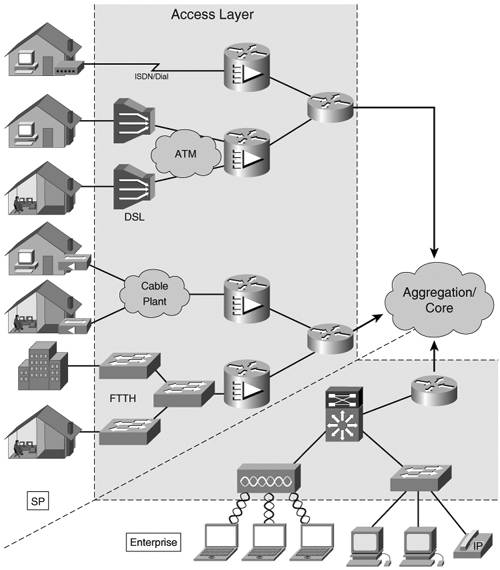
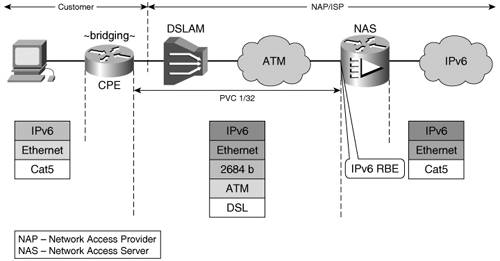
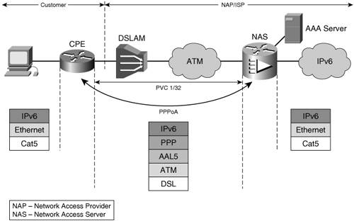
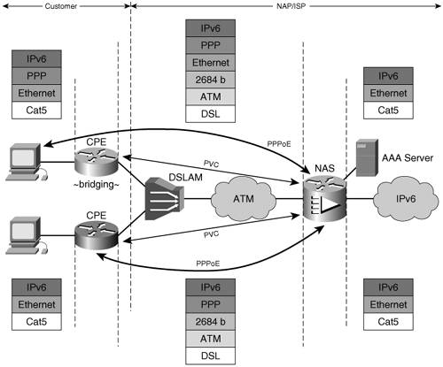
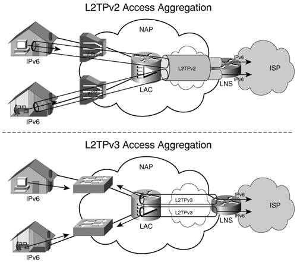
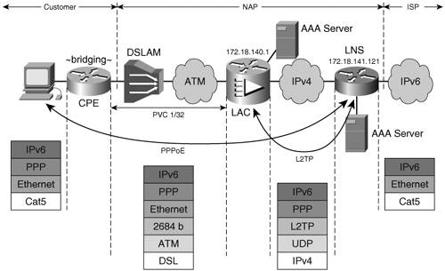
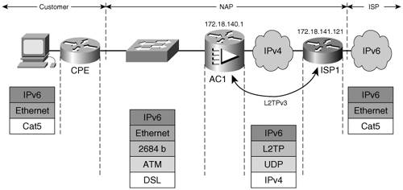
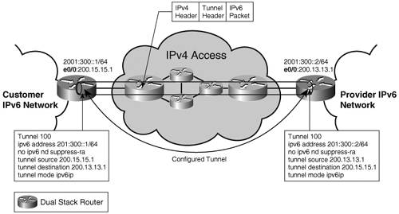
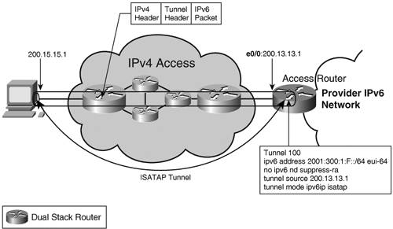

IPv6 Network AccessThe access layer (AL) can be defined as the set of network elements that accommodates the media types and the protocols used to transport the user traffic into and out of the network. It is made of layer 2 devices such as Ethernet switches, digital subscriber line access multiplexers (DSLAMs), wireless access points, as well as layer 3 devices and routers. All of them are part of the same network management domain as the rest of the network (distribution and core layers). Depending on the design and service offering, the user traffic can exit the AL at layer 2, in which case the IP version might not matter, or it can exit at layer 3. The AL enables users to connect to the network, via an enterprise intranet or a service provider, and the services provided by it. Figure 3-4 depicts a few of the many types of users accessing a network:
Figure 3-4. Network Access LayerA user can mean a simple device such as a PC or appliance or it can mean an entire private network. This section covers how to enable IPv6 unicast connectivity across the AL. Media TypesThe IPv6 AL supports the same media types as the IPv4 AL, but IPv6 implementations might not support some types because of market obsolescence:
Note Cisco IOS software does not support IPv6 over obsolete media types such as ARCNET, FDDI, or Token Ring. Cisco IOS software does not offer an implementation of Switched Virtual Circuits (SVCs) for ATM. Note Even though IPv6 supports the same media types as IPv4, some IPv6-specific details must be considered. The way each media type handles multicast is important, because of its use in basic protocols such as Neighbor Discovery. Examples:
With the exception of cable networks, in all these cases IPv6 can be deployed natively. With cable access, the network elements, their functionality, and their operation are standardized in the DOCSIS specifications. In its latest version (DOCSIS 2.0) and in the versions used in today's cable networks, IPv6 is not explicitly supported. Missing pieces include the following:
Several proposals were made to address these gaps in the DOCSIS specifications. Until implemented, cable operators have to tunnel the IPv6 traffic across the cable networks. Native IPv6 AccessThe simplest way to provide IPv6 connectivity to the network users is to do it nativelythat is, by encapsulating the IPv6 packet in layer 2 header and trailer, no tunneling over IPv4. Depending on the network design, you should consider three scenarios:
Routed AccessIf the infrastructure permits it, the simplest way to provide IPv6 access over any media type with the exception of cable networks is to terminate each layer 2 domain (PVC, VLAN, WLAN) on a routed access aggregator interface. In this case, the customer premises equipment (CPE) has to be enabled for IPv6. For Ethernet and wireless access, the configuration is straightforward: global prefix under the main or the dot1Q/ISL-encapsulated subinterfaces. In the case of DSL and ATM PVCs, in general, the routed RFC 2684 encapsulation is used with a different IPv6 prefix defined for each one of the PVCs. Bridged AccessIn IPv4, service providers prefer to bridge their DSL customers in a single IP subnet to save address space. The user traffic reaches the access router over an RFC 2684 bridged PVC. The traffic can be picked up from the bridge through a virtual interface, as in the case of Cisco IOS Integrated Routing and Bridging (IRB), or through the use the Cisco IOS Routed Bridged Encapsulation (RBE) feature. The latter solution is the most commonly used in today's IPv4 DSL deployments. IPv6 RBE is a feature that allows the router to pick up the IPv6 traffic from the bridged encapsulation and route it. Figure 3-5 presents the typical topology in which the IPv6 RBE feature is used. The figure depicts the underlying technologies over which the IPv6 packet is transported. Figure 3-5. IPv6 RBEWhen a bridged ATM PVC has the IPv6 RBE feature enabled on the access concentrator (Figure 3-5), it can be configured with an IPv6 address allowing it to terminate the layer 2 domain and route the IPv6 traffic through the rest of the network. Example 3-10 shows this configuration, with the IPv6 address and the RBE configuration highlighted. Example 3-10. IPv6 RBE Configuration
The interface configuration line no ipv6 nd suppress-ra explicitly re-enables the router to send RAs over that PVC. In this case, the CPE is bridging the traffic, and because it is IPv6 unaware, it does not have to be upgraded. All the nodes in the customer site are part of the 2001:1:1:1::/64 network. Note Note that IPv6 RBE is different from IPv4 RBE. With the latter, all subscribers connecting to the same access router are part of the same IPv4 subnet. With IPv6 RBE, each PVC has its own IPv6 subnet. PPP-Encapsulated IPv6 AccessPPP is used on point-to-point media such as leased lines, dialup, and DSL. Service providers also use it to emulate a point-to-point link over Ethernet, as in the case of Point-to-Point Protocol over Ethernet (PPPoE). This enables an ISP to better manage its customers or a network access provider (NAP) to hand over customer management to an ISP. When the ISP controls the AL, it can terminate the PPP sessions at the network access server (NAS), part of the AL. With DSL, the access media chosen for these examples, there are two ways in which the PPP encapsulation can be done, as follows:
PPP over ATMIn this scenario (Figure 3-6), the user IPv6 traffic is natively forwarded to a CPE that has an ATM PVC established over DSL to the access concentrator (NAS). The user traffic is encapsulated and transported via a PPP over ATM AL 5 (AAL5) established between the CPE and the NAS. Figure 3-6. IPv6 over PPPoAThe CPE has to route the IPv6 user traffic, and that means it will have to be upgraded to be a dual-stack router. A RADIUS server is used to authenticate and authorize the CPE-initiated PPP session. It also performs accounting functions. The configuration of a PPPoA setup is similar for IPv4 and IPv6. On the CPE, the PVC to the service provider is associated with dialer 1. This is shown in the following example: interface ATM0 pvc 1/32 encapsulation aal5mux ppp dialer dialer pool-member 1 The dialer interface is configured for PPP, to use Challenge Handshake Authentication Protocol (CHAP) for authentication and to accept and autoconfigure an address for itself, as highlighted in Example 3-11. Example 3-11. CPE PPP Configuration with CHAP Authentication
The dialer interface is also configured with the host name and password that it will use to identify itself when opening the PPP session. When the PPP session is up and the dialer interface has an IPv6 address assigned by the provider, the CPE has to know where to route the user traffic. For this, a default IPv6 route points all traffic out the dialer interface, as shown here: ipv6 route ::/0 Dialer1 The NAS has to be configured to terminate the 1/32 PVC and associate it with a virtual template: interface ATM0/0/0.1 point-to-point pvc 1/32 encapsulation aal5mux ppp Virtual-Template1 The virtual template is instantiated every time a user attempts to open a session. The authentication protocol (CHAP) is defined along with the pool from which a prefix is assigned to the PPP session. Because of the additional headers introduced by PPP, an adjustment is made to the maximum transmission unit (MTU) size used over this PPP 0session. Example 3-12 shows the key configuration elements. Example 3-12. NAS PPP Configuration with CHAP Authentication
The dsl pool assigns /64 prefixes from a /56 prefix: ipv6 local pool dsl 2001:1:1::/56 64 cache-size 1000 User authentication/authorization can be performed locally on the NAS or with the help of a RADIUS server. In the latter case, the following has to be globally configured on the NAS (Example 3-13). Example 3-13. Relevant Configuration for Using RADIUS Authentication
Although IPv6-specific RADIUS attributes are used in this implementation, the NAS is communicating with the RADIUS server over IPv4. It is expected that the RADIUS connection to the NAS will be in place from the operating IPv4 service. When the CPE establishes the PPP session to the NAS, an instance of the virtual interface is created from the template, and the first prefix from the pool is assigned to the session, as shown in Example 3-14. Example 3-14. Output Example Showing Information Relevant to an Established PPP Connection
You can use the troubleshooting steps used for IPv4 PPP deployments to troubleshoot IPv6 PPP, too. PPP over EthernetWith PPPoE (specified in RFC 2516), the PPP session is established over bridged AAL5 protocol data units (PDUs). Its operation is similar to that of PPPoA, as shown in Figure 3-7; but with PPPoE, you have two deployment options:
Figure 3-7. IPv6 over PPPoENote The advantage of having the user initiate the PPPoE session is that the CPE is IPv6 unaware, so it does not have to be upgraded to deploy IPv6. The disadvantage with this model is that each of the customer's nodes needs a separate PPP session to the ISP. Communication between the user's hosts will go via the ISP. In the case where the PPPoE session is initiated from the hosts, the CPE is simply configured to bridge between its Ethernet interface and the ATM PVC to the NAS. When the CPE is initiating the PPPoE session, its configuration is similar to that of a PPPoA CPE. In this case, dialer and default route configurations are the same, whereas the PPPoE-specific portion is as follows: vpdn enable ! vpdn-group pppoe request-dialin protocol pppoe The ATM subinterface configured for the 1/32 PVC to the NAS is enabled for PPPoE as shown here: interface ATM0.1 point-to-point pvc 1/32 pppoe-client dial-pool-number 1 The NAS configuration is the same in both cases. The RADIUS, virtual template, and pool configuration is identical to the example presented in the PPPoA section. The PPPoE-specific elements are as follows: vpdn enable ! vpdn-group pppoe accept-dialin protocol pppoe virtual-template 1 And the protocol being enabled on the ATM interface is this: interface ATM0/0/0.1 point-to-point pvc 1/32 encapsulation aal5snap protocol pppoe In addition to the PPP-relevant show commands and debugs, you can use PPPoE-specific commands such as show vpdn and debug vpdn pppoe-events. Note Although this configuration example was given for a DSL access type, the same applies if the access is Ethernet for a Fibre To The Home (FTTH) user. Virtualized Access LayerA wholesale network access provider (NAP) is not interested in handling subscribers at layer 3. After providing broadband access, the NAP tunnels the subscribers to an ISP for address assignment and IP traffic forwarding. In other words, the NAP provides the ISP with a virtual AL. Figure 3-8 shows a conceptual representation of a NAP's operation. Figure 3-8. Virtualized Access Layer Using L2TPIn today's IPv4 wholesale service provider networks, the most commonly used aggregation method is that of tunneling the PPP-encapsulated user traffic over a Layer 2 Transport Protocol version 2 (L2TPv2) tunnel to the ISP. However, L2TPv2 can be used only if the user is accessing the network via PPP. Otherwise, the option is to bridge the user traffic to the ISP over an L2TPv3 tunnel (Figure 3-8). L2TPv2 Access AggregationIn this scenario, the NAP collects the PPP sessions at the L2TP access concentrator (LAC) that is part of the AL and sends them over an L2TPv2 tunnel to the L2TP network server (LNS), where the PPP sessions are terminated (see Figure 3-9). Figure 3-9. L2TPv2 AggregationExample 3-15 shows the key configuration items of the LAC. Example 3-15. LAC Configuration in an L2TPv2 Aggregation Deployment Model
The virtual template interface borrows the IPv6 address of FastEthernet0. The L2TP tunnel is set up over IPv4 between the LAC (172.18.140.1 and identifying itself as lac-example when setting up the tunnel) and the LNS (172.18.141.121), which has the configuration shown in Example 3-16. Example 3-16. LNS Configuration in an L2TPv2 Aggregation Deployment Model
The AAA configuration on both LAC and LNS is similar to that of the NAS in the PPP section of this chapter. The prefixes are assigned from the same pool (dsl) but in this case by the LNS. Note Note that the L2TPv2 tunnel is set up over the IPv4 network. This is a reasonable approach, because it would most likely leverage existing L2TP infrastructure used for IPv4 traffic. L2TP over IPv6 is also available for SPs that plan to parity between IPv4 and IPv6 in terms of service deployment. The status of the PPP and L2TP sessions can be viewed on the LAC, as shown in Example 3-17. The tunnel to lns-example with IP address 172.18.141.121 is shown in established (est) state. Example 3-17. Status of PPP and L2TP Sessions on a LAC Router
The LNS de-encapsulates the IPv6 traffic from L2TP and PPP and then routes it across the ISP network. L2TPv3 Access AggregationL2TPv3 offers SPs a mechanism to create a pseudowire between the user-facing interfaces of two distinct access routers (when interconnecting two customer sites together) or the interface toward the ISP (when providing access to an ISP). The two endpoints are part of the same layer 2 domain, and there is no need for PPP encapsulation. This tunneling mechanism can be applied to Ethernet and Frame Relay interfaces. Similar to the L2TPv2 case, the tunnel is set up over IPv4 (Figure 3-10). Figure 3-10. L2TPv3 AggregationWhen applied to the interface, the protocol can be instructed to match only the IPv6 traffic based on its 0x86DD Ethertype and send it over the tunnel. The IPv4 traffic will be routed as usual by the router. In Figure 3-10, the L2TPv3 tunnel is set up over IPv4 between routers AC1 (172.18.140.1) and ISP1 (172.18.141.121). An IPv6-user pseudowire class was defined on each router. Example 3-18 shows the relevant configuration of the routers in Figure 3-10. Example 3-18. Configuration of Routers in an L2TPv3 Aggregation Deployment Model
The L2TPv3 approach proves useful in offering SOHO or other businesses a native IPv6 link between campuses or to an IPv6 ISP. For broadband users, however, the L2TPv2 would probably scale better. Access over TunnelsIPv6 over IPv4 tunnels can be used over various segments of a network, and the reasons for using them fall into one or more of the following categories:
At the AL, all these reasons can justify the use of tunnels. In particular, tunneling is sometimes a viable option in this portion of the network because its interface with devices of various types and capabilities, devices that cannot be easily upgraded to support IPv6 natively. For a service provider, it might be cost-ineffective to replace or upgrade all CPE used in providing broadband access to home users. Various tunneling mechanisms were developed to deal with deployment challenges such as traversing IPv4 NATs or scaling to a large number of sites. Table 3-1 in the "Overview" section of this chapter summarizes the IPv6 over IPv4 tunneling types currently in use along with their key features. Some of these tunneling mechanisms are intended to provide IPv6 connectivity to hosts only so they are used specifically in the AL portion of the network. These tunnels are discussed in more detail in this section. The others can be used to interconnect sites as well as hosts and thus can be used in any part of the network. To show them applied in various contexts, some of them are presented in this section; the others are presented in the "IPv6 over the Backbone" section of this chapter. Manually Configured TunnelThe manually configured tunnel (MCT) was one of the first transition mechanisms developed for IPv6. For this reason, MCT is supported by most IPv6 implementations, making it a safe choice when different vendors make the tunnel-termination devices. MCT is a static, point-to-point tunnel. It terminates on dual-stack routers. The tunnel endpoint's IPv4 addresses have to be routable in the transitioned domain. A fixed IPv6 prefix has to be configured on the tunnel interfaces. Figure 3-11 shows the relevant router configuration for the MCT. Figure 3-11. Configured TunnelIn the case of the network AL, the tunnel is typically set up between a CPE or the user's host and a router within the AL. Figure 3-11 shows an example of a configured tunnel between a CPE with IPv4 address 200.15.15.1 and the provider access router with IPv4 address 200.13.13.1. Note In Cisco IOS systems, the RA feature is turned off by default on tunnel interfaces. If the RAs need to be exchanged over the tunnel interface, the feature should be re-enabled, as shown in the configuration example of no ipv6 nd suppress-ra. The static, manually configured nature of the tunnel makes it difficult to scale and manage. It is not suitable for providing access to home users where significant provisioning and scalability issues would impact the deployment. MCT is better used in linking a few customer (enterprise or ISP) sites in a fixed, long-term topology. Tunnel Broker and Tunnel ServerThe MCT is suitable for the static setup of interconnecting IPv6 locations. If used for connectivity of a large number of isolated hosts, static management of the MCT would not scale. The tunnel broker is a resource (outside of the routers terminating the MCT) that can automatically configure on a router the endpoint of the tunnel requested by a host. The host communicates with the tunnel broker over IPv4. The tunnel server is an additional feature of the tunnel broker where the broker functionality is performed by the same device that terminates the tunnel. Both these mechanisms are attempting to provide means to scale the MCT solution when delivering IPv6 unicast service to a large number of isolated hosts. Note Neither tunnel broker nor tunnel server is supported in Cisco IOS software. Tunnel broker functionality can be achieved with an interoperating third-party device that acts as the broker. TeredoNATs are a pervasive fact in today's IPv4 networks. Most IPv6 over IPv4 tunneling mechanisms cannot transit NAT because of the protocol number used (41 for configured tunnel, for example). This means that if a user's NAT router cannot be upgraded to support tunneling mechanisms, no tunnels can be sourced from the customer site. Teredo, or the shipworm, was developed to solve this problem. It provides address assignment and host-to-host, automatic tunneling for unicast IPv6 connectivity when hosts are located behind IPv4 NAT(s). Teredo tunnels carry the IPv6 data encapsulated in IPv4 UDP datagrams (port 3544). A Teredo client, located behind NAT, knows the IPv4 globally unique address of a Teredo server. The client initiates the tunnel by contacting the server, which in turn signals the setup process to a Teredo Relay router connected to the IPv6 domain that has to be reached. The server is a stateless device and just proxies the tunnel setup process. The operation of the Teredo tunnel is described in detail in the latest revision of Internet Draft draft-huitema-v6ops-teredo. Note In a Teredo-based deployment, a router can perform the function of a server or a relay. However, this tunneling mechanism is not supported in Cisco IOS software. Teredo is a last-resort transition mechanism for providing IPv6 connectivity. It is limited to host-to-host types of tunnels (as opposed to edge to edge or host to edges), and it is not a practical solution for providers to use it for the deployment of a paid service. If the infrastructure (CPEs and access routers) supports it or if/when IPv4 NAT handles protocol translation 41, the deployment should focus on native IPv6, 6 to 4, or ISATAP connectivity, as discussed in the next sections. ISATAPThe Intra-Site Automatic Tunnel Addressing Protocol (ISATAP) specified in RFC 4214 was designed to provide a scalable tunneling mechanism within a privately addressed or globally addressed IPv4 site. Similar to other tunneling mechanisms, ISATAP encapsulates IPv6 in IPv4 using ip-protocol 41, so it does not work through NAT. ISATAP treats the underlying IPv4 infrastructure as an NBMA link layer. This mechanism is automatic; after the router has been configured, any client or other router within the site that is aware of its existence can establish a tunnel to it. It is standardized in the latest version of draft-ietf-ngtrans-isatap. Note Note that because of the automatic nature of the tunnel, access control has to be implemented to make sure that not all nodes that learn about an ISATAP router establish a tunnel with it. The key concept of ISATAP operation is that of the ISATAP format interface ID. Chapter 2 showed how to build an EUI-64 format interface ID from the layer 2 address. You can use a similar concept if considering the IPv4 infrastructure as the link layer on which IPv6 is running. In the case of ISATAP, the first 32 bits of the interface ID are 0000:5EFE; the other 32 are the IPv4 address of the interface, as shown in Example 3-19. Example 3-19. Building an ISATAP Format Interface ID
This interface ID can be appended to a link-local, a unique-local, or a global unicast prefix. Hosts configured with an IPv4 address and then enabled for ISATAP automatically build a link-local address based on the mechanism described in the preceding example. They can then do a name service lookup for the well-known service ISATAP and download the list of IPv4 addresses of the ISATAP operating routers in that domain. This enables the hosts to establish an ISATAP tunnel to one of these routers. The client sends a Router Solicitation and, with the suppression of RAs being explicitly disabled on the tunnel interface of the router, it will receive the necessary information to autoconfigure. Figure 3-12 shows a configuration example for an access router terminating ISATAP tunnels of users. Figure 3-12. ISATAP TunnelA look at the IPv6 properties of the tunnel interface reveals the concepts of this tunneling mechanism (see Example 3-20). Example 3-20. Status of ISATAP Tunnel Interface
The interface ID used for the link-local, unique local and/or the global IPv6 addresses is generated from the IPv4 address. The ISATAP tunnels can be used between the routers within a site. The router configuration will be the same as the one presented in Figure 3-12. Considering the fact that within an enterprise or inside a provider's network it is unlikely to have to deal with NAT, ISATAP represents a practical way to provide IPv6 access to hosts and to interconnect IPv6 locations. In the case of broadband users, this tunneling mechanism might not be usable because of NAT. ISATAP could still be used in such scenarios if the tunnels are set up from the CPEs that have an IP address routable within the provider's network. ISATAP is particularly suited for providing IPv6 access to individual, isolated dual-stack nodes within an IPv4 site. Its mode of operation also lends itself well to ad-hoc networking, and this proves useful for 3GPP networks. |